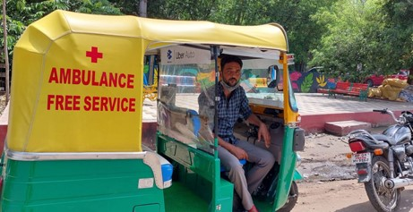

Aditya Mukarji :
During the lockdown in India, Aditya Mukarji, a 16-year old climate activist, sought to support these vulnerable groups. He mobilized the other residents living in his apartment complex and a few others, encouraging them to donate dry rations or money to provide support to local wage workers and people living in poverty during the quarantine. With the funds that he collected, Aditya ordered and distributed one month’s worth of dry rations to 72 families in the neighboring clusters and to two shelters housing orphans and street children. He also encouraged his neighbors and contacts to contribute to non-governmental organizations (NGOs) working to support disadvantaged and vulnerable people on a larger scale.
Mohammad Javed Khan :
Mohammad Javed Khan, an auto-rickshaw driver from Bhopal knew he had to do something. Mr. Khan couldn’t see people scrambling for medical treatment and decided to convert his auto-rickshaw into an ambulance equipped with an oxygen cylinder, hand sanitiser, PPE kit, and oximeter.

Sonu Sood:
Actor Sonu Sood came out to help lakhs of migrants workers who wanted to go back to their hometown during the COVID-19 lockdown by arranging food, buses, trains and even chartered flights and in some cases providing livelihood.